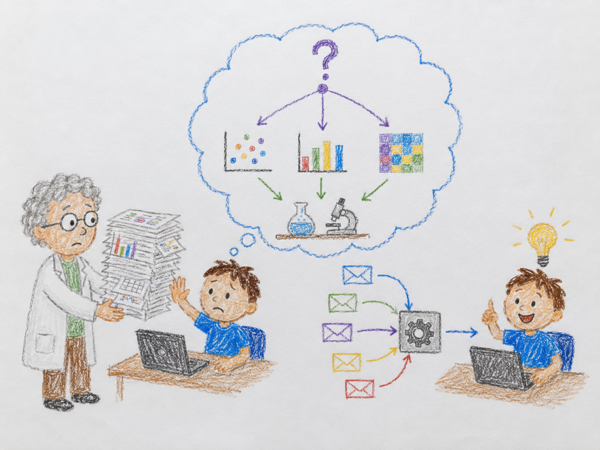

Stop telling me what to do. Tell me what you want to know.
Most of the work you do to make your research visible changes nothing. You can usually tell which work in about one question: if you finish it, what decision does it move? Here is the story that taught me to ask.
Years ago I ran the machine-learning modeling on a life-science project. A senior biologist kept handing me spreadsheets, six years of them, filled in by hand by team after team, and telling me exactly what to compute. I built report after report. He kept asking for a different cut.
After the fourth rejected report I stopped and said: stop telling me what to do, tell me what you want to know. He told me. I asked why he needed it. Then I asked the question that ended the project: say the answer comes back X, Y, or Z, what do you do differently in each case? Nothing. His next experiments were already decided. I had spent days feeding a decision that read none of its inputs.

What does this have to do with research visibility?
Everything, because visibility work has the same trap. It is easy to do ten things that feel productive, a new profile here, another repost there, and change nothing about whether the right people find your work. So go upstream before you start. Name the decision the task is meant to move: a grant panel that should already know your name, a subfield that keeps missing your papers. Then ask whether any result of the task changes what happens next. If it doesn’t, the task is optional, however busy it keeps you.
That is the bet behind Loud Camel, a tool that helps researchers get cited and recognized. Rather than a long research-visibility to-do list, it runs only the moves that change whether the right people, and the AI search tools they now use like ChatGPT and Perplexity, can find your work at all.
I wrote the longer version of this, including where it goes wrong for founders and not just researchers, in my newsletter, Direction Matters: Stop telling me what to do. Tell me what you want to know.
Takeaway
Before your next visibility task, name the decision it feeds and ask what result would change it. If nothing would, you are already done.